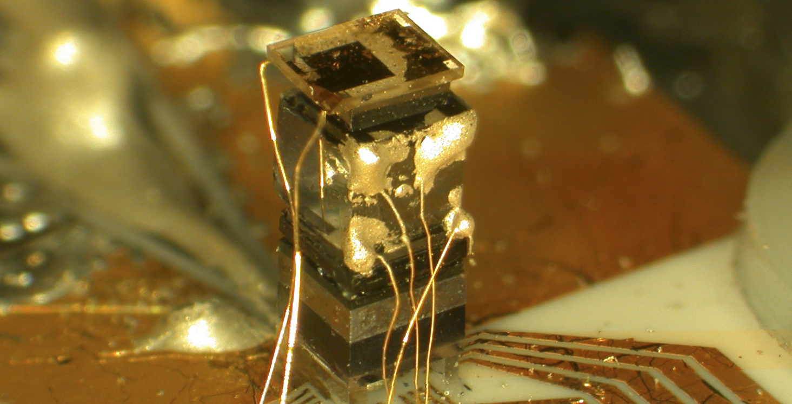

Time is distance
●
June 6, 2020

As long as you’re moving, time is distance.
You’ll get anywhere you want, given enough time. You can get there faster by increasing your speed, but moving at all is more important than moving fast. A slower journey is more memorable too. Focus on moving forward, and time will be in your favour.